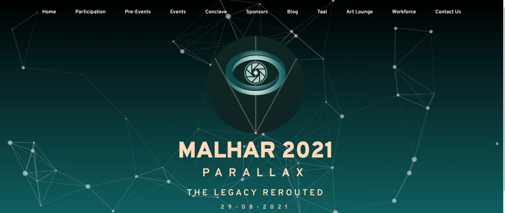

All Articles
Featured in BITMAP 2022
AI – All Inclusive!
About Me I am Varun Manoj Kumar from SY BSC-IT. I am a VIP 😁! – Yes, a “Very Important Person” for my family and friend…
Read more
Malhar Website Accessibility
Malhar ’21, our very own college festival, was held online last year for the first time. With it being held online, it w…
Read more